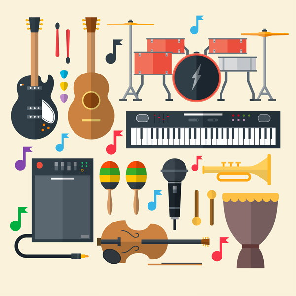

Um instrumento musical é um objeto, construído com o propósito de produzir música. Os vários tipos de instrumentos podem ser classificados de diversas formas, sendo uma das mais comuns a divisão de acordo com a forma pela qual o som é produzido.
O estudo dos instrumentos musicais designa-se por organologia.
A data e a origem do primeiro aparelho considerado como instrumento musical é objeto de debates. Os arqueologistas tendem a debater este assunto referindo a validade de várias evidências como artefatos e trabalhos culturais.
Instrumentos de sopro: podem ser feitos de madeira, como, por exemplo, a flauta, o clarinete, o saxofone, o fagote e o oboé, embora algumas vezes possuam metal e plástico em sua composição. Os instrumentos de sopro de madeira se distinguem dos instrumentos de sopro feitos de metal pela forma como o som é produzido: pela vibração do ar em um tubo oco. O ar vibra soprando-se no bocal - no caso da flauta -, ou através de uma palheta simples - no clarinete e no saxofone -, ou de uma palheta dupla - no caso do oboé e do fagote. Os instrumentos de sopro feitos de metal são produzidos com latão e o som nasce da vibração dos lábios do músico no bocal, o que faz com que o ar vibre dentro do tubo. Nesse grupo encontramos o trompete, o trombone, a corneta, a trompa e a tuba.
Instrumentos de corda: o som é produzido pela vibração de uma ou mais cordas esticadas, através de fricção (violino, violoncelo, contrabaixo) ou de dedilhado (harpa, lira, violão, guitarra).
Instrumentos de teclas: o som é produzido por meio de um teclado que faz vibrações no ar (órgão de tubo) ou em cordas (piano). Uma curiosidade: a parte interna de um piano possui um mecanismo com mais de 6.000 peças - cada tecla aciona um martelo revestido de feltro que bate numa corda de aço, produzindo um som.
Instrumentos de percussão: os sons são produzidos percutindo, sacudindo, raspando ou batendo um elemento contra o outro. São exemplos de instrumentos de percussão: xilofone, vibrafone, gongo (ou tantã), triângulo, címbalo, castanholas, claves, maracas e tambores. Os tambores consistem em uma pele ou um plástico esticados sobre uma ou duas molduras. Podem ser divididos em três grandes grupos, de acordo com sua forma: fuste estreito (pandeiro), semi-esféricos (timbales) e cilíndricos (conga). Podem ser tocados utilizando-se as mãos, baquetas, escovinhas ou varetas de ferro. Instrumentos eletrônicos: geram sinais eletrônicos que são amplificados e convertidos em sons. Por exemplo: teclado, sintetizador, bateria eletrônica, sampler etc.